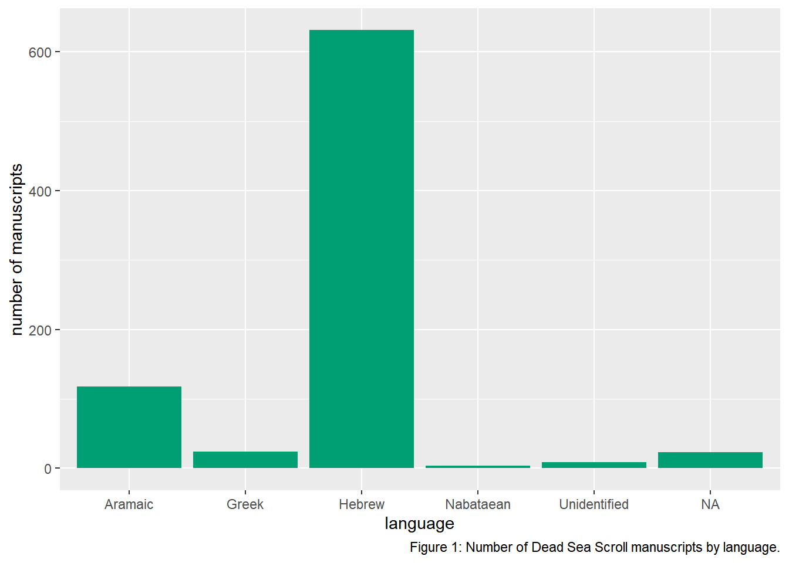
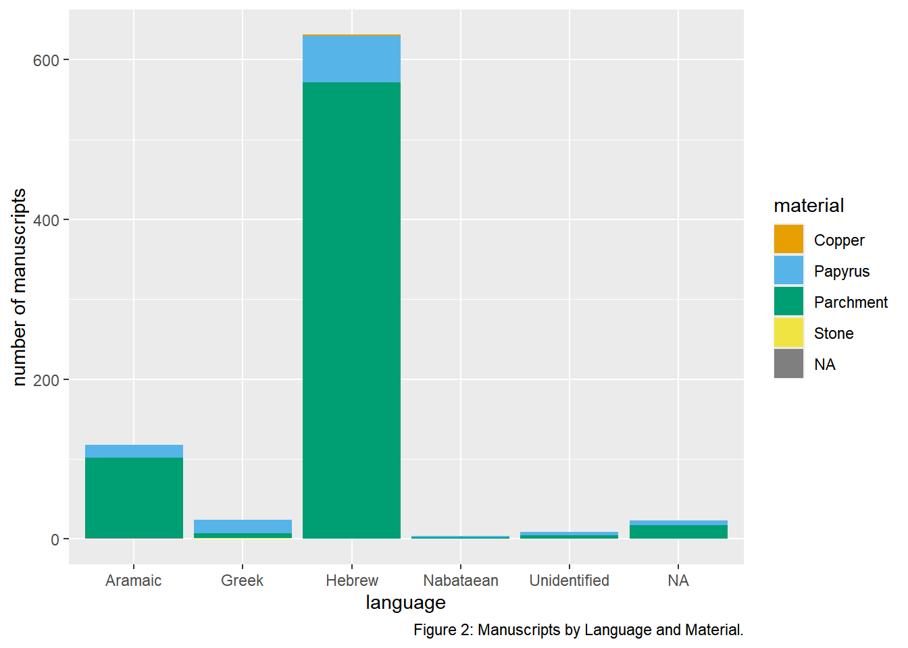
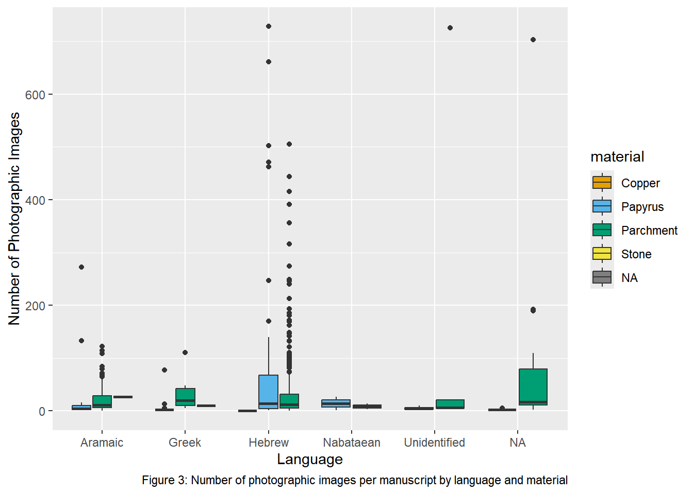

TT_1
Make sure every package used in this assignment is installed on your machine. If not, install it by either:
- RStudio –> Console –> run
install.packages(package name) - RStudio –> Packages pane –> Install –> type
package name–> click Install.
Introduction
Tidy Tuesday is a weekly data project put on by some folks from the R Data Science community. Each week, a different data set is posted and people around the world wrangle and visualize that data. According to the organizers, “The intent of Tidy Tuesday is to provide a safe and supportive forum for individuals to practice their wrangling and data visualization skills independent of drawing conclusions.”
The goals of this TidyTuesday are:
- Practice generating questions. You have to decide what to ask and how to answer it with a graphic.
- Practice identifying what viz and (eventually) wrangling tools are useful for addressing your questions.
- Get a sense of the broader data science community. Check out what people share out on X/Twitter #TidyTuesday. Maybe even share your own #TidyTuesday work on social media. Recent Mac alum Erin Franke (X/Twitter) has an inspiring account! Scrolling through, you’ll notice the trajectory of her work, starting from COMP/STAT 112 to today. Very cool.
Exercise 1
Go to TidyTuesday. Pick a dataset that was posted in the last 4 weeks. Here, include:
- A short (~2 sentence) written description of your data. This should include:
- the original data source, ie, where did TidyTuesday get the data from?
- units of observation, ie, what are you analyzing?, and
- the data size, ie, how many data points do you have? how many variables are measured on each data point?.
The TidyTuesday got the data from Tony Galvan of Golden Dome Data Science. The units of observation are 809 manuscripts, and there are a total of 18 variables measured on each data point.
- Code to import and examine the basic properties of your chosen dataset. This code must support the facts you cited in your short written description.
Exercise 2
In the 3 sections below (Viz 1, 2, 3), construct 3 separate graphs that tell a connected story about the data you chose.
Before each viz:
- write a simple but specific research question you’re trying to address with the viz.
- write a 2-4 sentence summary of what you learn from the viz. This should connect back to your research question!
After each viz:
- Comment on at least 2 effective aspects of the viz (consider the effective visualization principles).
- Comment on at least 2 aspects of the visualization that could be improved. Perhaps these are aspects that you don’t know how to implement yet but wish you could update it.
Make sure each viz:
- has meaningful axis labels and legend titles
- has a figure caption (fig.cap)
- uses alt text (fig.alt)
- uses a more color-blind friendly color palette
Tips:
- Start with some questions in mind of what you want to learn.
- Start with a simple viz (viz 1), and build this up into something multivariate (viz 3).
- Reflect on each viz – what new questions do you have after checking out the viz? Let these questions guide your next viz.
Viz 1
What languages are the manuscripts written in?
Code
library(tidyverse)
library(RColorBrewer)
ggplot(dead_sea_scrolls, aes(x = language)) + labs(y="number of manuscripts",caption = "Figure 1: Number of Dead Sea Scroll manuscripts by language.", alt = "Bar chart showing the number of Dead Sea Scroll manuscripts written in each language.") +
geom_bar(fill="#009E73")
What I learned from this viz is that the majority of the manuscripts are written in Hebrew, Greek and Aramaic. However, the overarching majority of them are written in Hebrew.
2 effective aspects of this viz is that it is easy to compare the number of manuscripts across languages. The axes also clearly show what is being measured in the graph. 2 aspects that could be improved is that it only shows one variable, so we don’t necessarily know why Hebrew is the most common, and it could be useful to know whether certain languages were associated with particular physical materials.
Viz 2
How does the material of the manuscript vary across the different languages?
Code
ggplot(dead_sea_scrolls, aes(x = language, fill = material)) + scale_fill_manual(values = c(
"#E69F00", "#56B4E9", "#009E73","#F0E442")) + labs(y="number of manuscripts",caption = "Figure 2: Manuscripts by Language and Material.", alt = "Stacked bar chart showing the number of Dead Sea Scroll manuscripts by language and material.")+
geom_bar()
What I learned from this viz is that parchment is the most common material used for these manuscripts. Papyrus is the next most common, and then stone, but very little are written on stone, and then copper is the rarest. ::: {.callout-note title=“Summary”}
2 effective aspects of this viz is that it allowed us to compare two variables at once, and it also helped show which materials were more common and which were not, allowing us to have a better understanding of how information was kept during this period. 2 areas that could be improved is that since the bars are stacked, it’s kind of hard to tell how much materials like stone and copper are used, and the graph could maybe also show the size of individual manuscripts.
:::
Viz 3
How does the number of photographic images of a manuscript vary by language and material?
Code
ggplot(dead_sea_scrolls, aes(x = language,y = num_images, fill = material)) + scale_fill_manual(values = c(
"#E69F00", "#56B4E9", "#009E73","#F0E442")) + labs(x = "Language", y="Number of Photographic Images",caption = "Figure 3: Number of photographic images per manuscript by language and material", alt = "Boxplot showing the distribution of photographic images per manuscript across languages, with manuscript material represented by fill color.")+
geom_boxplot()
The number of photographic images varies among the manuscripts, with some manuscripts having many more images than others. The distributions also differ across languages and materials.
2 effective aspects of this viz is that the box plots showed the distribution of photographic images rather than just a single number, and having 3 variables makes this more multivariate than just 2, allowing us to see more things with the data than we could’ve with just 2 or 1. 2 aspects that could be improved upon is since there are multiple different types of materials, the boxplots get a little crowded, and maybe a different viz that we haven’t quite learned yet might make it cleaner to see all 3 variables together.
Finalize Work
Congratulations 🎉 You’re done with Part 2 of Homework 3. Make sure Part 1 is also complete.
To submit: click Render, open the generated HTML file to check that it looks right, then use GitHub Desktop to commit and push both this .qmd file and its HTML file. Remember: if it is not pushed, it is not submitted. See Submission Procedure on the HW Instructions page for the detailed steps.